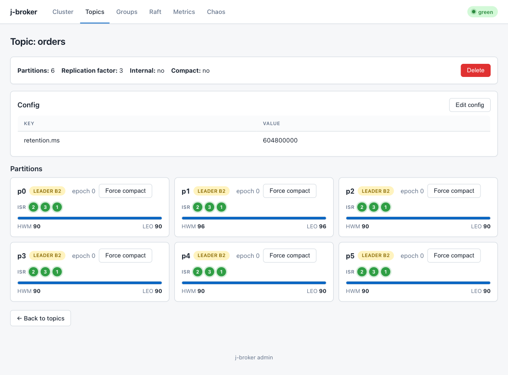
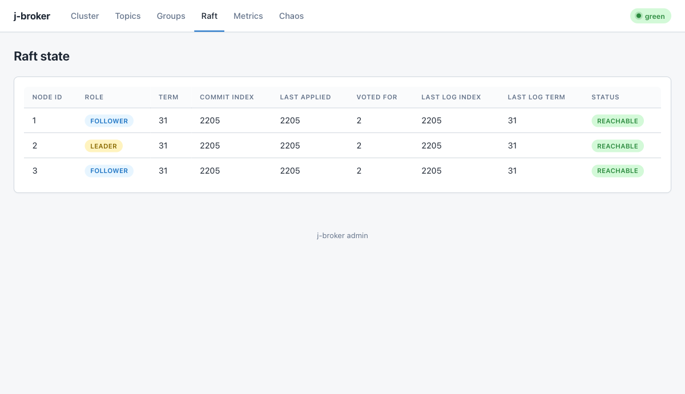
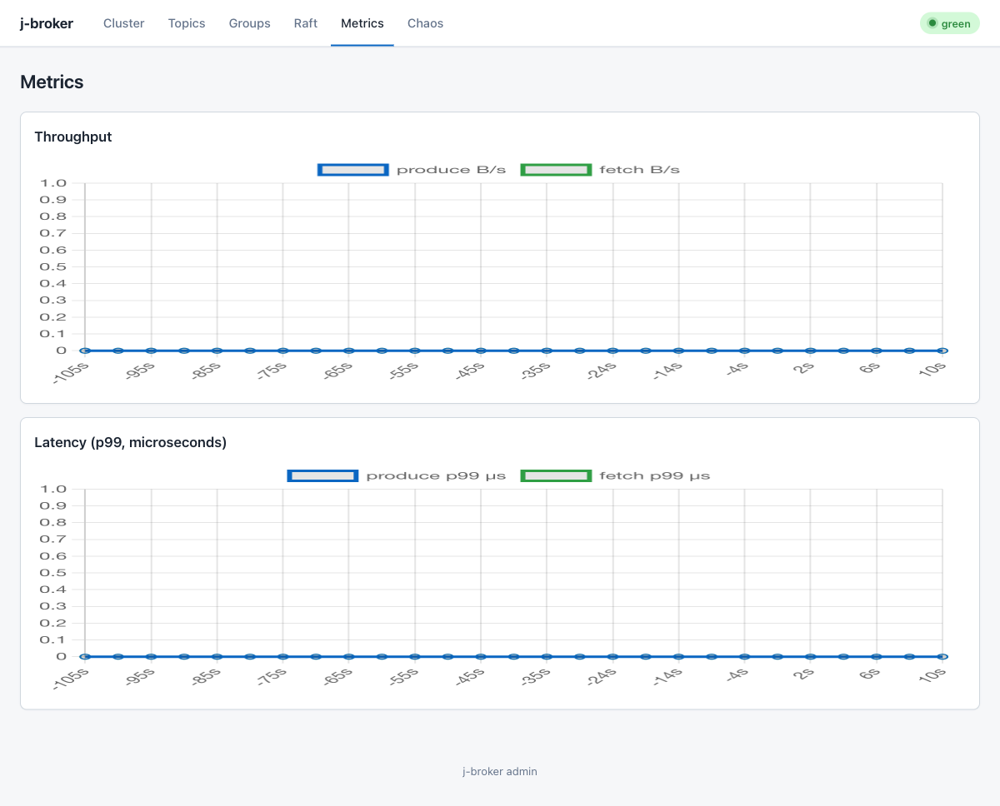

Operations
Day-to-day administration: topics, consumer groups, cluster lifecycle, monitoring, quotas, and storage. Every command here is the j-broker CLI (broker-app/build/install/broker-app/bin/broker-app) or the admin REST API it wraps.
admin subcommand talks to the admin app's REST API, default --admin http://localhost:9090. Against the Docker Compose or Helm deployment, pass --admin http://localhost:15672. Every REST path lives under /api/v1/ and uses snake_case JSON.Topics
j-broker admin [--admin URL] topics list
j-broker admin [--admin URL] topics describe --topic NAME
j-broker admin [--admin URL] topics create --topic NAME [--partitions N] [--rf N]
j-broker admin [--admin URL] topics delete --topic NAMEREST equivalents: GET /api/v1/topics, GET /api/v1/topics/{name}, POST /api/v1/topics with {"name": "...", "partitions": N, "replication_factor": N, "config": {}}, DELETE /api/v1/topics/{name}. Create answers 201, delete 204. Describe fans out to every broker and merges the leader-reported high watermark and log end offset per partition — run against the live cluster:
$ j-broker admin --admin http://localhost:15672 topics create --topic docso-ops --partitions 3 --rf 3
HTTP 201
$ j-broker admin --admin http://localhost:15672 topics describe --topic docso-ops
HTTP 200
{"name":"docso-ops","partitions":3,"replication_factor":3,"internal":false,"compact":false,
"partition_states":[{"partition":0,"leader":2,"isr":[2,3,1],"replicas":[2,3,1],
"leader_epoch":0,"partition_epoch":0,"high_watermark":0,"log_end_offset":0}, ...]}
The same describe merge in the admin UI: per-partition leader, ISR, HWM/LEO, force-compact buttons, and the edit-config modal.
Per-topic configuration
Topic config is a flat string map. PATCH /api/v1/topics/{name}/config takes the map directly and returns the merged effective config:
$ curl -X PATCH http://localhost:15672/api/v1/topics/docso-ops/config \
-H 'Content-Type: application/json' -d '{"retention.ms":"86400000"}'
{"retention.ms":"86400000"}These per-topic keys override the cluster defaults set on the broker (broker-app/README.md has the full cluster-default table):
| Key | Meaning |
|---|---|
retention.ms | Time retention. Cluster default 7 days; -1 = unlimited. |
retention.bytes | Size-retention budget per partition. Default -1 (unlimited). |
segment.bytes | Segment roll threshold. Cluster default 128 MiB. |
min.insync.replicas | acks=all durability floor for this topic. Cluster default 2; RF-1 topics clamp down. |
max.message.bytes | Largest serialized produce batch. Cluster default 1 MiB, hard cap 8 MiB. |
flush.messages / flush.ms | Explicit fsync triggers. Default off (fsync on segment roll + replication). |
cleanup.policy | Set to compact for key-based log compaction instead of deletion. |
Force compaction
The cleaner ticks every 5 minutes (log.cleaner.interval.ms). To compact a partition now instead of waiting — also a button on the UI topic page:
$ curl -X POST http://localhost:15672/api/v1/topics/docso-ops/partitions/0/compact
{"records_kept":0,"brokers_compacted":3}The admin app fans the compaction out to every broker so all replicas converge to the compacted view.
Consumer groups
j-broker admin [--admin URL] groups list
j-broker admin [--admin URL] groups describe --group IDREST: GET /api/v1/consumer-groups and GET /api/v1/consumer-groups/{id}. Describe returns per partition the committed offset, high watermark, lag, and owning member — the raw material for lag diagnosis (read it twice a minute apart; the lagging-consumer runbook interprets the patterns). Live:
$ j-broker admin --admin http://localhost:15672 groups describe --group demo-pipeline
HTTP 200
{"group_id":"demo-pipeline","state":"Empty","generation":2,"assignor":"range","members":[],
"partitions":[{"topic":"demo-source","partition":0,"committed_offset":561,
"high_watermark":-1,"lag":-1,"owner_member_id":""}]}Two group mutations exist on the REST/UI surface (no CLI verb):
| Operation | Call | Notes |
|---|---|---|
| Reset offsets | POST /api/v1/consumer-groups/{id}/reset-offsetsbody {"resets": [{"topic": "T", "partition": 0, "offset": N}]} | Per-partition error codes come back in the response. Stop the consumers first — a live member's next commit overwrites the reset. Also a modal on the UI group page. |
| Delete group | DELETE /api/v1/consumer-groups/{id} | Drops the group and its offsets; the next join re-forms it fresh. |
offsets.retention.ms (default 7 days). A group idle longer than that loses its commits and the bundled consumer falls back to the log start — which reads as sudden huge lag plus reprocessing.Cluster lifecycle
All lifecycle verbs route through /api/v1/cluster/* to the controller (the Raft leader); a non-leader answers NOT_LEADER with a suggested-leader hint and the admin app's broker pool retries there. Mutations answer 202 — joins, drains, and reassignments advance asynchronously on the controller tick, so you poll cluster membership / cluster reassignments to watch them. Start from the membership view (live):
$ j-broker admin --admin http://localhost:15672 cluster membership
HTTP 200
{"voter_ids":[1,2,3],"join":{"phase":"IDLE","broker_id":0,"lag":0},
"decommission":{"phase":"IDLE","broker_id":-1,"remaining_partitions":0,"detail":""}}
The UI Raft page during lifecycle operations: one LEADER, converged terms and commit indexes across all voters.
Add a broker (learner → voter)
j-broker admin --admin URL cluster add-broker --id 4 --host broker4 --raft-port 9192 --broker-port 9092
# REST: POST /api/v1/cluster/add-broker
# {"broker_id": 4, "host": "broker4", "raft_port": 9192, "broker_port": 9092}Start the new broker process first (same voter list plus itself), then issue the join. The call returns 202; the controller admits the broker as a non-voting learner, feeds it the Raft log, and promotes it to voter only once its replication lag closes. Watch cluster membership: join.phase leaves IDLE, join.lag counts down, and on completion the id appears in voter_ids. In the UI, the overview page's cluster-lifecycle panel drives the same call and the nodes table gains the new broker; broker_registered arrives on the SSE event stream. Not run against the demo cluster.
Decommission a broker
j-broker admin --admin URL cluster decommission --id 3
# REST: POST /api/v1/cluster/decommission/3Also 202. The controller drains the broker: partition leaderships move to other ISR members, replicas are reassigned off it, and finally the id is removed from the voter set. Watch cluster membership — decommission.phase, decommission.remaining_partitions counting to zero, and detail for what it is currently moving. Expect leader_changed and isr_shrink/isr_expand events on the SSE stream while the drain runs. Keep the voter count odd afterwards: Raft write availability needs a majority. Not run against the demo cluster.
Partition reassignment
j-broker admin --admin URL cluster reassign --topic T --partition 0 --replicas 1,2,4
j-broker admin --admin URL cluster reassignments
j-broker admin --admin URL cluster cancel-reassignment --topic T --partition 0
# REST: POST /api/v1/cluster/reassignments {"topic": "T", "partition": 0, "replicas": [1,2,4]}
# GET /api/v1/cluster/reassignments
# DELETE /api/v1/cluster/reassignments/T/0The new replica set is copied via the ordinary replica-fetch path: added replicas catch up from the leader, join the ISR, and only then do removed replicas drop out. Catch-up traffic on a broker that is gaining a replica is rate-limited by the broker config reassignmentThrottleBytesPerSec (a Broker.Config field; 0 disables the throttle) so a move cannot starve client traffic. GET /api/v1/cluster/reassignments lists what is still in flight (an empty [] means done — live output above); DELETE cancels an in-flight move and the UI overview panel exposes the same cancel action. While a move runs, the Partitions Grafana dashboard shows the new follower's jbroker_replication_lag_records falling and jbroker_isr_size stepping up when it joins. Reassignment was not exercised on the demo cluster; the list/cancel calls were.
Preferred-leader rebalance
$ curl -X POST http://localhost:15672/api/v1/cluster/rebalance-leadership # live: HTTP 200
# CLI: j-broker admin --admin URL cluster rebalance-leadersRe-spreads partition leadership toward each partition's preferred (first-listed) replica after failovers have piled leadership onto few brokers. A background balancer does this continuously; the verb forces a pass now. Watch the topic describe output (leader ids) or the leader_changed SSE events; on the demo cluster with balanced leadership it is a no-op, which is the healthy answer.
What failover looks like
Broker failure needs no lifecycle verb at all — the controller's fencer demotes a dead broker's leaderships to surviving ISR members within about 3.5 seconds of its last heartbeat, and clients re-route on the leader hints:
A producer and consumer running through docker kill of the partition leader: both log the reroute to the new leader and continue without message loss.
Monitoring
The admin app is the single scrape point. Its MetricsScraper fans DescribeMetrics out to every broker every 5s and re-exposes the merged snapshot as jbroker_* gauges tagged by broker_id at /actuator/prometheus — broker pods have no metrics port of their own. One consequence to internalize: when a broker stops answering, its gauges freeze at their last values rather than dropping to zero; jbroker_broker_scrape_ok is the staleness signal.
Local Prometheus + Grafana stack (Prometheus on :9091, Grafana on :3000, dashboards auto-provisioned from scripts/monitoring/grafana/dashboards/ — Cluster Overview and Partitions):
docker compose -f docker-compose.yml -f docker-compose.monitoring.yml --profile monitoring up
The admin UI's own metrics page: rolling throughput and p50/p99/p999 latency, backed by
GET /api/v1/metrics/throughput, /metrics/latency, and /metrics/timeseries?window=5m.
Alert pack
On Kubernetes with prometheus-operator, enable metrics.serviceMonitor.enabled (scrapes the admin's /actuator/prometheus; keep the interval at or above the admin's own 5s broker-scrape cadence) and metrics.prometheusRule.enabled together — the rule expressions assume the namespace target label the ServiceMonitor attaches. The full pack, from deploy/helm/j-broker/templates/prometheusrule.yaml:
| Alert | Severity | Fires when |
|---|---|---|
JBrokerUnderReplicatedPartitions | warning | A partition's ISR has been smaller than its assigned replica set for 10m. Precursor to NOT_ENOUGH_REPLICAS produce failures. |
JBrokerReplicationLagHigh | warning | A follower has stayed more than thresholds.replicationLagRecords (default 1000) records behind its leader for 15m — about to fall out of the ISR. |
JBrokerReplicationStalled | critical | The leader holds records past the high watermark and the watermark has not moved in 10m — follower fetch is wedged, not slow. Consumers cannot see the stuck records. |
JBrokerRaftTermFlapping | warning | The metadata-Raft term rose more than thresholds.raftTermIncreasesPer10m (default 3) times in 10m — the controller quorum keeps re-electing; metadata operations stall. |
JBrokerBrokerUnreachable | critical | jbroker_broker_scrape_ok == 0 for 5m — a broker stopped answering the admin's metrics fan-out. Its other gauges are stale while this fires. |
JBrokerDiskHeadroomLow | critical | jbroker_disk_headroom_low == 1 for 5m — the broker is refusing produces with STORAGE_FULL. Keyed on the broker's own flag so the chart carries no byte threshold that could drift. |
JBrokerOfflinePartitions | critical | jbroker_offline_partitions > 0 for 5m — partitions whose entire ISR is down. Controller-reported, because per-partition gauges go stale (not zero) when leaderless and can never alert on this themselves. |
JBrokerMinIsrRejections | warning | jbroker_not_enough_replicas_rejections keeps growing — acks=all produces are failing the min.insync.replicas floor while producers retry. |
JBrokerAdminMetricsDown | critical | Rendered only with the ServiceMonitor: Prometheus has not scraped the admin endpoint for 5m. Every other alert in the pack is blind while this fires. |
Quotas
Per-principal byte-rate quotas on the produce and fetch paths. Configured on the broker's Broker.Config: produceQuotaBytesPerSec and fetchQuotaBytesPerSec (a rate of 0, the default, disables that quota entirely) and quotaRedisUrl. Follower replication traffic rides the separate ReplicaFetch RPC, which has no quota gate — capping clients can never stall the ISR.
Deny semantics: an over-budget request is rejected — not silently delayed — with error QUOTA_VIOLATED and a message carrying the configured rate and a retry-after: produce quota exceeded: N B/s; retry in Mms. Well-behaved clients back off for the stated throttleMillis and retry. Denials are counted into the metrics snapshot (produce_quota_throttle_millis / fetch_quota_throttle_millis in DescribeMetrics).
Scope: with no Redis URL, each broker enforces its own in-memory bucket, so a principal's effective cluster budget is per-broker. Point quotaRedisUrl at a shared Redis (the Helm chart's redis.enabled bundles one) and the counters become cluster-wide — one budget per principal across all brokers.
Storage operations
Retention sizing
With retention.bytes set, each partition's on-disk footprint converges to the band [retention.bytes, retention.bytes + segment.bytes) — the cleaner (5-minute tick) only deletes whole segments. Size volumes as partitions × (retention.bytes + segment.bytes) per broker plus headroom, and alert on jbroker_disk_usable_bytes well above the watermark.
Disk headroom
Each broker probes its data volume every 10s. Below the storage.headroom.bytes watermark (default 1 GiB, env JBROKER_STORAGE_HEADROOM_BYTES) it refuses client produces with retriable STORAGE_FULL while fetch, replication, offset commits, and admin RPCs keep serving — the degradation is produce-only by design, and produces resume on the first probe after space frees. Remediation order: tighten retention, force-compact, delete topics, grow the volume.
Backup and restore
# Back up from a cleanly stopped broker: copy the ENTIRE data dir —
# partition logs AND Raft state together, never separately.
# Gate every backup (and every restore) on the offline integrity check:
$ j-broker admin verify-log /path/to/backup/data
OK docso-ops-0 segments=1 batches=12 records=48 nextOffset=48
...
N partition(s) verified cleanverify-log CRC-verifies every batch of every partition without modifying anything and exits 1 on any corrupt batch, so restore scripts can gate on it. It accepts the data dir or its topics/ subdirectory. To restore, boot a broker on the copy with the same id and ports. Run it when you take the backup, not when you need it.
The format-version marker
A format.version marker at the data-dir root records the on-disk format the data was written with. Upgrades read older data forward; a rolling downgrade onto newer data fails loudly at boot instead of corrupting silently. A broker that refuses to start right after a version change is this marker doing its job — not corruption.
Incident response
The operations runbooks cover the six failure modes an operator actually meets — broker down, disk full, offline partition, lagging consumer group, certificate expiry, and full-cluster cold start — each with symptoms (including which alerts fire), diagnosis commands, remediation, and prevention. They are the incident-time reference; this page is the steady-state one.
The demo as a learning tool
The built-in demo drives a real workload you can watch through every surface on this page — the UI, the CLI, and the metrics:
j-broker demo feed --bootstrap H:P,... --topic T --count N [--rate R] [--partitions K] [--prefix S]
j-broker demo drain --bootstrap H:P,... --group G --topic T [--topic T2 ...]
j-broker demo pipeline --bootstrap H:P,... --source S --sink D --group G --txn-id ID --expected N
j-broker demo verify --bootstrap H:P,... --source S --sink D --group G --expected Nfeed produces at a controllable rate, drain consumes with a group, pipeline runs a transactional consume-transform-produce stage, and verify audits the result end to end (it prints verify: PASS, exactly-once contract holds on success). Run a feed, then watch lag move in groups describe, throughput on the metrics page, and per-partition state in topics describe — the fastest way to connect the admin surfaces to real traffic.
For how the pieces fit together underneath — Raft metadata, replication, the controller — see the architecture deep dive.